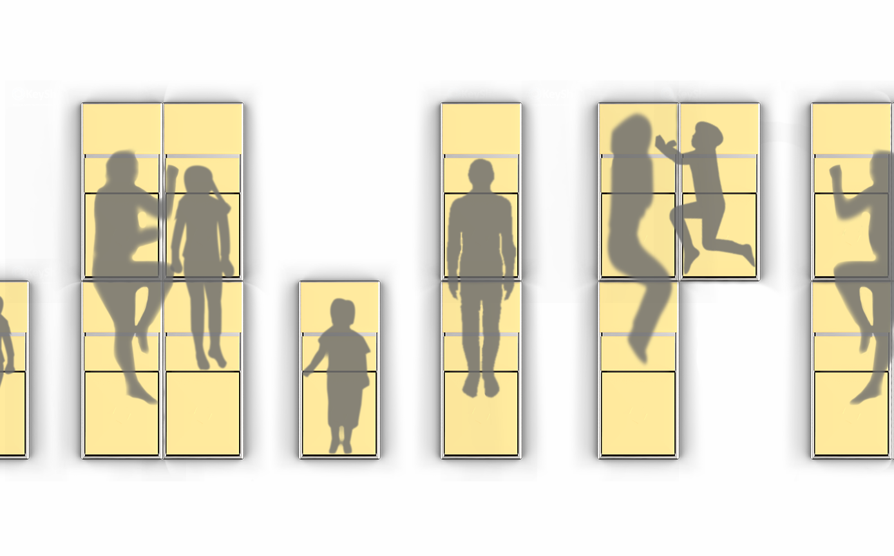
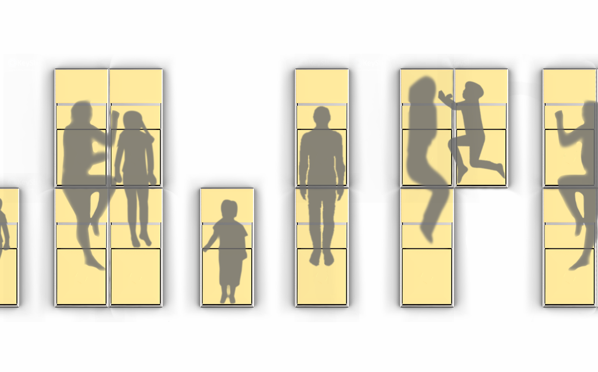

避難時に簡易ベッドになるパイプ椅子「emat」
名古屋市立大学 芸術工学部産業イノベーションデザイン学科 3年 甲斐翔
災害大国と呼ばれる日本。また避難所の劣悪な環境により「避難所後進国」とも呼ばれている。過去の大地震では災害による直接死よりもその後の避難生活の環境悪化などを理由とした関連死の方が４倍程多いというデータもある。
ematはそんな環境を作り出している問題の一つである「ざこ寝」と、避難時有効活用されていない体育館の「パイプ椅子」に注目したプロダクトである。普段は体育館に置かれているパイプ椅子を避難時に簡易ベッドとして使うことができる。これによりざこ寝の時の寒さを緩和することができる他パイプ椅子の簡易ベッドならではのよさも活かすことができると考えた。
制約の中での＋αな機構
必要最低限のパーツを用いての構成、無理のないパイプ加工という制約の中でのデザインを心がけ、生産時のコスト面を考慮した。普段学校で用いられる時は従来のパイプ椅子と変わらない仕組みで椅子に展開することができ、またスタッキングすることでコンパクトに収納することができる。椅子として使う時に支えとなる後列のパイプが背もたれ裏面のクッションへのストッパーにもなっているため、通常時子供が不用意に出して遊ぶことができないつくりになっている。
パイプ椅子ならではの「手軽さ」
ematは常に体育館に常備されているため、ダンボールベッドのように避難所への配送や積み降ろし作業、組み立て作業などの段階的に行う手間がない。そのため避難時すぐに取り出し使用することが可能であり、そして簡単な変形でベッドになるため老若男女誰でも扱うことができる。また人それぞれの大きさに合わせて組み合わせることができるため、体育館という限られたスペースを有効活用することができる。
 
